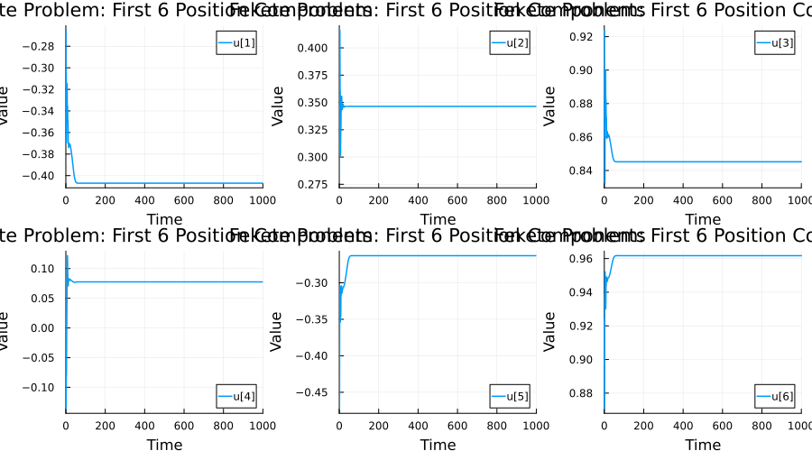
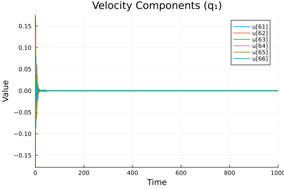
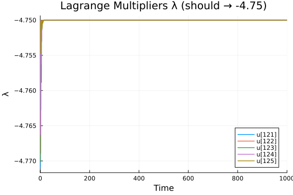
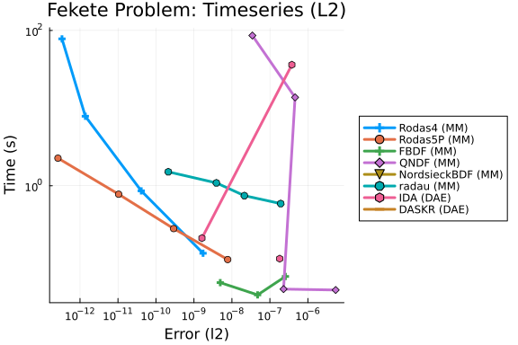
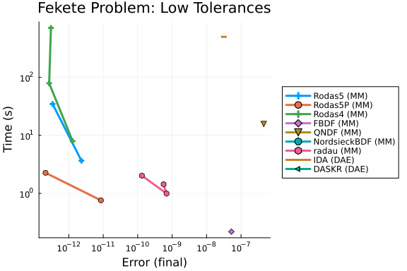
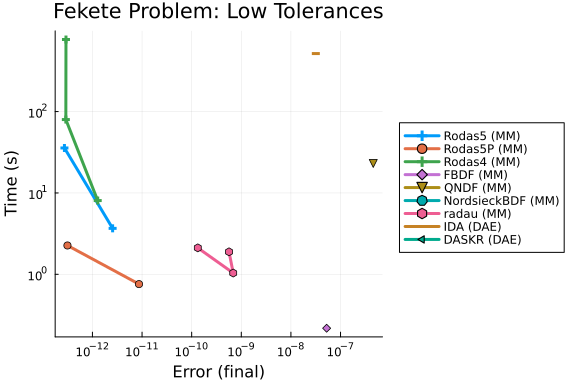

Fekete Problem DAE Work-Precision Diagrams
This is a benchmark of the Fekete problem, an index-3 DAE describing $N=20$ charged particles on the unit sphere, from the IVP Test Set.
The problem computes elliptic Fekete points: $N=20$ particles on the unit sphere $S^2$ that maximize the product of mutual distances $V(x) = \prod_{i<j} \|x_i - x_j\|_2$. By mechanical analogy, the particles are subject to a repulsive Coulomb-like force and an adhesion damping force $A_i = -\alpha q_i$ ($\alpha = 0.5$). The particles are constrained to the unit sphere via Lagrange multipliers $\lambda_i$.
The original index-3 system has the physics: $\ddot{p}_i = -\alpha \dot{p}_i + 2\lambda_i p_i + \sum_{j \neq i} \frac{p_i - p_j}{\|p_i - p_j\|^2}$ $0 = \|p_i\|^2 - 1$
The stabilized index-2 formulation (from the Fortran test set) introduces velocity variables $q_i = \dot{p}_i$ and Baumgarte stabilization multipliers $\mu_i$, giving 160 = 8N state variables with mass matrix $M = \text{diag}(I_{6N}, 0_{2N})$: $\dot{p}_i = q_i + 2\mu_i p_i, \quad \dot{q}_i = -\alpha q_i + 2\lambda_i p_i + \sum_{j\neq i}\frac{p_i - p_j}{\|p_i - p_j\|^2}$ $0 = \|p_i\|^2 - 1, \quad 0 = 2p_i \cdot q_i$
We benchmark three formulations:
- Mass-Matrix ODE Form: The stabilized index-2 system as
M·du/dt = f(u, t), solved with Rosenbrock-W and BDF methods. - DAE Residual Form: Same system as
F(du, u, t) = M·du − f(u, t) = 0, solved with IDA and DASKR. - MTK Automatic Index Reduction: The original index-3 system is given directly to ModelingToolkit, which uses
structural_simplifyto automatically perform index reduction and generate an index-1 DAE. This benchmarks MTK's symbolic transformation pipeline on a large-scale constrained mechanical system. This formulation is built below but is currently excluded from the work-precision diagrams — as of 2026-08-23 it fails to initialize and, when initialization is forced, goes unstable after 0.4% of the time span. See "MTK Index-Reduced Formulation: Currently Dropped", which reproduces the failure.
Reference: Bendtsen, C., Thomsen, P.G.: Numerical solution of differential algebraic equations. IMM-DTU, Tech. Report (1999). Available at the IVP Test Set.
using OrdinaryDiffEq, DiffEqDevTools, Sundials, ModelingToolkit,
ODEInterfaceDiffEq, Plots, DASKR
using OrdinaryDiffEqBDF, OrdinaryDiffEqFIRK, OrdinaryDiffEqRosenbrock
using ModelingToolkit: t_nounits as t, D_nounits as D
using LinearAlgebra, StatisticsProblem Definition
We translate the Fortran reference implementation (fekete.f) into Julia. The problem has $N = 20$ particles with $8N = 160$ state variables.
Initial Conditions
The initial positions place the 20 particles in four latitude rings on the sphere (3 + 7 + 6 + 4 particles), with initial velocities $q(0) = 0$ and multipliers $\mu(0)$ computed for consistency.
const N_ART = 20
const NEQN = 8 * N_ART # 160
const ALPHA_DAMP = 0.5
function fekete_init()
y = zeros(NEQN)
# Ring 1: 3 particles at beta = 3π/8
for i in 1:3
α = 2π * i / 3 + π / 13
β = 3π / 8
y[3*(i-1)+1] = cos(α) * cos(β)
y[3*(i-1)+2] = sin(α) * cos(β)
y[3*(i-1)+3] = sin(β)
end
# Ring 2: 7 particles at beta = π/8
for i in 4:10
α = 2π * (i - 3) / 7 + π / 29
β = π / 8
y[3*(i-1)+1] = cos(α) * cos(β)
y[3*(i-1)+2] = sin(α) * cos(β)
y[3*(i-1)+3] = sin(β)
end
# Ring 3: 6 particles at beta = -2π/15
for i in 11:16
α = 2π * (i - 10) / 6 + π / 7
β = -2π / 15
y[3*(i-1)+1] = cos(α) * cos(β)
y[3*(i-1)+2] = sin(α) * cos(β)
y[3*(i-1)+3] = sin(β)
end
# Ring 4: 4 particles at beta = -3π/10
for i in 17:20
α = 2π * (i - 17) / 4 + π / 17
β = -3π / 10
y[3*(i-1)+1] = cos(α) * cos(β)
y[3*(i-1)+2] = sin(α) * cos(β)
y[3*(i-1)+3] = sin(β)
end
# q(0) = 0 (indices 3N+1 : 6N already zero)
# μ(0) = 0 initially, then compute consistent values
# Compute consistent μ via one feval pass (from Fortran init)
yprime = similar(y)
fekete_rhs!(yprime, y, nothing, 0.0)
for i in 1:N_ART
s = 0.0
for j in 1:3
s += y[3*(i-1)+j] * yprime[3*N_ART + 3*(i-1)+j]
end
y[6*N_ART+i] = -s / 2.0
end
return y
endfekete_init (generic function with 1 method)Right-Hand Side
The RHS encodes the equations of motion: repulsive Coulomb forces between particles on the sphere, damping, and the algebraic constraints.
function fekete_rhs!(dy, y, p, t)
nart = N_ART
T = eltype(dy)
# Unpack state: positions p, velocities q, multipliers λ, μ
# p_i = y[3(i-1)+1 : 3(i-1)+3], i = 1..N
# q_i = y[3N+3(i-1)+1 : 3N+3(i-1)+3]
# λ_i = y[6N+i]
# μ_i = y[7N+i]
# Compute pairwise repulsive forces f(i,j,k) = (p_i - p_j) / |p_i - p_j|²
# and accumulate into velocity derivatives
@inbounds for i in 1:nart
lam_i = y[6*nart+i]
mu_i = y[7*nart+i]
# dp_i/dt = q_i + 2*μ_i*p_i
for k in 1:3
pk = y[3*(i-1)+k]
qk = y[3*nart+3*(i-1)+k]
dy[3*(i-1)+k] = qk + 2*mu_i*pk
end
# dq_i/dt = -α*q_i + 2*λ_i*p_i + Σ_{j≠i} (p_i - p_j)/|p_i - p_j|²
for k in 1:3
pk = y[3*(i-1)+k]
qk = y[3*nart+3*(i-1)+k]
force_k = -ALPHA_DAMP * qk + 2*lam_i * pk
for j in 1:nart
if j != i
rn = zero(T)
for m in 1:3
rn += (y[3*(i-1)+m] - y[3*(j-1)+m])^2
end
force_k += (pk - y[3*(j-1)+k]) / rn
end
end
dy[3*nart+3*(i-1)+k] = force_k
end
# Algebraic equations
# φ_i = |p_i|² - 1 = 0 (sphere constraint)
phi_i = -one(T)
for k in 1:3
phi_i += y[3*(i-1)+k]^2
end
dy[6*nart+i] = phi_i
# g_i = 2*p_i·q_i = 0 (differentiated constraint)
gpq_i = zero(T)
for k in 1:3
gpq_i += 2*y[3*(i-1)+k] * y[3*nart+3*(i-1)+k]
end
dy[7*nart+i] = gpq_i
end
nothing
endfekete_rhs! (generic function with 1 method)Analytical Jacobian
The Jacobian is dense due to the pairwise Coulomb interactions. We provide the analytical Jacobian translated from the Fortran jeval subroutine.
function fekete_jac!(J, y, p, t)
nart = N_ART
neqn = NEQN
T = eltype(J)
fill!(J, zero(T))
# Extract state
pp = zeros(T, nart, 3)
qq = zeros(T, nart, 3)
lam = zeros(T, nart)
mu = zeros(T, nart)
for i in 1:nart
for k in 1:3
pp[i,k] = y[3*(i-1)+k]
qq[i,k] = y[3*nart+3*(i-1)+k]
end
lam[i] = y[6*nart+i]
mu[i] = y[7*nart+i]
end
# Precompute |p_i - p_j|²
rn = zeros(T, nart, nart)
for j in 1:nart, i in 1:nart
for k in 1:3
rn[i,j] += (pp[i,k] - pp[j,k])^2
end
end
# J_pp: ∂(dp_i/dt)/∂p_i = 2μ_i * I₃
for i in 1:nart, k in 1:3
J[3*(i-1)+k, 3*(i-1)+k] = 2*mu[i]
end
# J_pq: ∂(dp_i/dt)/∂q_i = I₃
for i in 1:nart, k in 1:3
J[3*(i-1)+k, 3*nart+3*(i-1)+k] = one(T)
end
# J_pμ: ∂(dp_i/dt)/∂μ_i = 2p_i
for i in 1:nart, k in 1:3
J[3*(i-1)+k, 7*nart+i] = 2*pp[i,k]
end
# J_qp (same i, same k): diagonal + force derivatives
for i in 1:nart, k in 1:3
val = 2*lam[i]
for j in 1:nart
if j != i
val += (rn[i,j] - 2*(pp[i,k] - pp[j,k])^2) / rn[i,j]^2
end
end
J[3*nart+3*(i-1)+k, 3*(i-1)+k] = val
end
# J_qp (same i, different k,m): off-diagonal spatial components
for i in 1:nart, k in 1:3, m in 1:3
if m != k
val = zero(T)
for j in 1:nart
if j != i
val -= 2*(pp[i,k] - pp[j,k])*(pp[i,m] - pp[j,m]) / rn[i,j]^2
end
end
J[3*nart+3*(i-1)+k, 3*(i-1)+m] += val
end
end
# J_qp (different i,l, same k): inter-particle force derivatives
for i in 1:nart, l in 1:nart
if l != i
for k in 1:3
J[3*nart+3*(i-1)+k, 3*(l-1)+k] =
(-rn[i,l] + 2*(pp[i,k] - pp[l,k])^2) / rn[i,l]^2
end
end
end
# J_qp (different i,l, different k,m): cross terms
for i in 1:nart, l in 1:nart
if l != i
for k in 1:3, m in 1:3
if m != k
J[3*nart+3*(i-1)+k, 3*(l-1)+m] +=
2*(pp[i,k] - pp[l,k])*(pp[i,m] - pp[l,m]) / rn[i,l]^2
end
end
end
end
# J_qq: ∂(dq_i/dt)/∂q_i = -α I₃
for i in 1:nart, k in 1:3
J[3*nart+3*(i-1)+k, 3*nart+3*(i-1)+k] = -ALPHA_DAMP
end
# J_qλ: ∂(dq_i/dt)/∂λ_i = 2p_i
for i in 1:nart, k in 1:3
J[3*nart+3*(i-1)+k, 6*nart+i] = 2*pp[i,k]
end
# J_λp: ∂φ_i/∂p_i = 2p_i
for i in 1:nart, k in 1:3
J[6*nart+i, 3*(i-1)+k] = 2*pp[i,k]
end
# J_μp: ∂g_i/∂p_i = 2q_i
for i in 1:nart, k in 1:3
J[7*nart+i, 3*(i-1)+k] = 2*qq[i,k]
end
# J_μq: ∂g_i/∂q_i = 2p_i
for i in 1:nart, k in 1:3
J[7*nart+i, 3*nart+3*(i-1)+k] = 2*pp[i,k]
end
nothing
end
# Out-of-place method for the same function object. It is never used by the
# solvers themselves (they call the in-place method above through `calc_J!`),
# but OrdinaryDiffEq's numerical-instability diagnostic calls the Jacobian
# out-of-place: when a solve aborts, `SciMLBase.check_error` ->
# `OrdinaryDiffEqCore.log_numerical_instability` ->
# `OrdinaryDiffEqDifferentiation.get_fresh_jacobian` -> `calc_J` evaluates
# `f.jac(u, p, t)` regardless of whether the problem is in-place. Without this
# method that diagnostic throws instead of printing, which turns an ordinary
# failed work-precision point into a hard error that kills the whole weave.
# (This is an upstream bug, fixed in OrdinaryDiffEqDifferentiation v3.9.0 --
# `get_fresh_jacobian` there branches on `isinplace` and calls `calc_J!`. This
# folder's Manifest pins v3.7.0, which does not. The workaround here is
# version-independent, so it stays correct either way; verified in isolation on
# 2026-08-24 against both v3.7.0 (throws without it) and v3.10.0.)
function fekete_jac!(y, p, t)
J = zeros(eltype(y), length(y), length(y))
fekete_jac!(J, y, p, t)
return J
endfekete_jac! (generic function with 2 methods)Mass-Matrix ODE Formulation
y0 = fekete_init()
# Mass matrix: M = diag(I_{6N}, 0_{2N})
M = zeros(NEQN, NEQN)
for i in 1:6*N_ART
M[i,i] = 1.0
end
# `FullSpecialize` rather than the default `AutoSpecialize`: under
# `AutoSpecialize`, `DiffEqBase.promote_f` replaces `f.jac` at solve time with a
# `FunctionWrappersWrapper` built from the in-place signature
# `(Matrix, u, p, t)` only. The out-of-place `f.jac(u, p, t)` call made by the
# instability diagnostic (see the Jacobian section above) then finds no matching
# wrapper and throws `No matching function wrapper was found!`. With
# `FullSpecialize` nothing is wrapped, so `f.jac` is `fekete_jac!` itself and
# that call dispatches to the out-of-place method defined above.
# SciMLBase's own docstring for `AutoSpecialize` also recommends against it for
# benchmarking ("callable wrapping can affect runtime"), so this is the right
# specialization level for this file regardless. `SciMLBase` is not a direct
# dependency of this environment, so it is reached through `OrdinaryDiffEq`.
mmf = ODEFunction{true, OrdinaryDiffEq.SciMLBase.FullSpecialize}(
fekete_rhs!, mass_matrix = M, jac = fekete_jac!)
tspan = (0.0, 1000.0)
mmprob = ODEProblem(mmf, y0, tspan)ODEProblem with uType Vector{Float64} and tType Float64. In-place: true
Non-trivial mass matrix: true
timespan: (0.0, 1000.0)
u0: 160-element Vector{Float64}:
-0.2650941332839412
0.2759922279796341
0.9238795325112867
-0.10646921403545888
-0.367574367807928
0.9238795325112867
0.37156334731940005
0.09158213982829398
0.9238795325112867
0.4945564328017459
⋮
0.0
0.0
0.0
0.0
0.0
0.0
0.0
0.0
0.0DAE Residual Formulation
function fekete_dae!(res, du, u, p, t)
f = similar(u)
fekete_rhs!(f, u, p, t)
# Residual: M*du - f(u) = 0
for i in 1:6*N_ART
res[i] = du[i] - f[i]
end
for i in 6*N_ART+1:NEQN
res[i] = -f[i] # algebraic: 0 = f_alg(u)
end
nothing
end
du0 = zeros(NEQN)
fekete_rhs!(du0, y0, nothing, 0.0)
# For differential variables, du0 = f(y0); for algebraic, du0 = 0
du0_dae = copy(du0)
du0_dae[6*N_ART+1:end] .= 0.0
differential_vars = vcat(trues(6*N_ART), falses(2*N_ART))
daeprob = DAEProblem(fekete_dae!, du0_dae, y0, tspan,
differential_vars = differential_vars)DAEProblem with uType Vector{Float64} and tType Float64. In-place: true
timespan: (0.0, 1000.0)
u0: 160-element Vector{Float64}:
-0.2650941332839412
0.2759922279796341
0.9238795325112867
-0.10646921403545888
-0.367574367807928
0.9238795325112867
0.37156334731940005
0.09158213982829398
0.9238795325112867
0.4945564328017459
⋮
0.0
0.0
0.0
0.0
0.0
0.0
0.0
0.0
0.0
du0: 160-element Vector{Float64}:
0.0
0.0
0.0
0.0
0.0
0.0
0.0
0.0
0.0
0.0
⋮
0.0
0.0
0.0
0.0
0.0
0.0
0.0
0.0
0.0MTK Automatic Index Reduction
We give ModelingToolkit the original index-3 system directly and let structural_simplify automatically perform index reduction. This benchmarks MTK's symbolic transformation pipeline — no manual constraint differentiation or variable elimination is performed.
ps_mtk = Vector{Num}(undef, 3*N_ART)
qs_mtk = Vector{Num}(undef, 3*N_ART)
λs_mtk = Vector{Num}(undef, N_ART)
for i in 1:N_ART
for k in 1:3
idx = 3*(i-1) + k
ps_mtk[idx] = only(@variables $(Symbol("p$(i)_$(k)"))(t) = y0[idx])
qs_mtk[idx] = only(@variables $(Symbol("q$(i)_$(k)"))(t) = 0.0)
end
λs_mtk[i] = only(@variables $(Symbol("lam$(i)"))(t) = 0.0)
end
eqs_mtk = Equation[]
# Kinematics: dp/dt = q (60 equations)
for idx in 1:3*N_ART
push!(eqs_mtk, D(ps_mtk[idx]) ~ qs_mtk[idx])
end
# Dynamics: dq/dt = -αq + 2λp + Coulomb (60 equations)
for i in 1:N_ART
for k in 1:3
idx = 3*(i-1) + k
coulomb = sum(
(ps_mtk[idx] - ps_mtk[3*(j-1)+k]) /
sum((ps_mtk[3*(i-1)+m] - ps_mtk[3*(j-1)+m])^2 for m in 1:3)
for j in 1:N_ART if j != i
)
push!(eqs_mtk, D(qs_mtk[idx]) ~ -ALPHA_DAMP*qs_mtk[idx] +
2*λs_mtk[i]*ps_mtk[idx] + coulomb)
end
end
# Position-level constraint: |p_i|² = 1 (20 index-3 constraints)
for i in 1:N_ART
push!(eqs_mtk, sum(ps_mtk[3*(i-1)+k]^2 for k in 1:3) ~ 1)
end
# Explicit automatic index reduction
@named sys_raw = ODESystem(eqs_mtk, t)
sys_mtk = structural_simplify(sys_raw)
mtkprob = ODEProblem(sys_mtk, [], tspan)
println("MTK automatic reduction → $(length(unknowns(sys_mtk))) states")MTK automatic reduction → 140 statesReference Solution
The Fortran test set provides a high-accuracy reference solution at $t = 1000$, computed with RADAU5 at rtol = atol = 1e-12. We use this as our ground truth and also compute a high-accuracy Julia reference for timeseries comparison.
# Reference values from Fortran solut() subroutine (RADAU5, tol=1e-12)
const REFSOL = zeros(NEQN)
REFSOL[ 1] = -0.4070263380333202
REFSOL[ 2] = 0.3463758772791802
REFSOL[ 3] = 0.8451942450030429
REFSOL[ 4] = 0.7752934752521549e-01
REFSOL[ 5] = -0.2628662719972299
REFSOL[ 6] = 0.9617122871829146
REFSOL[ 7] = 0.7100577833343567
REFSOL[ 8] = 0.1212948055586120
REFSOL[ 9] = 0.6936177005172217
REFSOL[ 10] = 0.2348267744557627
REFSOL[ 11] = 0.7449277976923311
REFSOL[ 12] = 0.6244509285956391
REFSOL[ 13] = -0.4341114738782885
REFSOL[ 14] = 0.8785430442262876
REFSOL[ 15] = 0.1992720444237660
REFSOL[ 16] = -0.9515059600312596
REFSOL[ 17] = 0.2203508762787005
REFSOL[ 18] = 0.2146669498274008
REFSOL[ 19] = -0.6385191643609878
REFSOL[ 20] = -0.4310833259390688
REFSOL[ 21] = 0.6375425027722121
REFSOL[ 22] = -0.1464175087914336
REFSOL[ 23] = -0.9380871635228862
REFSOL[ 24] = 0.3139337298744690
REFSOL[ 25] = 0.5666974065069942
REFSOL[ 26] = -0.6739221885076542
REFSOL[ 27] = 0.4740073135462156
REFSOL[ 28] = 0.9843259538440293
REFSOL[ 29] = -0.1696995357819996
REFSOL[ 30] = -0.4800504290609090e-01
REFSOL[ 31] = 0.1464175087914331
REFSOL[ 32] = 0.9380871635228875
REFSOL[ 33] = -0.3139337298744656
REFSOL[ 34] = -0.7092757549979014
REFSOL[ 35] = 0.5264062637139616
REFSOL[ 36] = -0.4688542938854929
REFSOL[ 37] = -0.8665731819284478
REFSOL[ 38] = -0.4813878059756024
REFSOL[ 39] = -0.1315929352982178
REFSOL[ 40] = -0.2347897778700538
REFSOL[ 41] = -0.8594340408013130
REFSOL[ 42] = -0.4541441287957579
REFSOL[ 43] = 0.5530976940074118
REFSOL[ 44] = -0.7674370265615124
REFSOL[ 45] = -0.3242273140037833
REFSOL[ 46] = 0.7711050969896927
REFSOL[ 47] = 0.6357041816577034
REFSOL[ 48] = 0.3573685519777001e-01
REFSOL[ 49] = 0.7103951209379591
REFSOL[ 50] = 0.2403570431280519
REFSOL[ 51] = -0.6614886725910596
REFSOL[ 52] = -0.3038208738735660e-01
REFSOL[ 53] = 0.4501923293640461
REFSOL[ 54] = -0.8924145871442046
REFSOL[ 55] = -0.5772996158107093
REFSOL[ 56] = -0.1766763414971813
REFSOL[ 57] = -0.7971892020969544
REFSOL[ 58] = 0.2414481766969039
REFSOL[ 59] = -0.3416456818373135
REFSOL[ 60] = -0.9082846503446250
# Velocities q at t=1000 (near-zero at stationary state)
REFSOL[ 61] = 0.2409619682166627e-15
REFSOL[ 62] = -0.1139818460497816e-15
REFSOL[ 63] = 0.1627536276556335e-15
REFSOL[ 64] = 0.1745651819597609e-15
REFSOL[ 65] = -0.1914278710633076e-15
REFSOL[ 66] = -0.6639600671806291e-16
REFSOL[ 67] = 0.1708576733899083e-15
REFSOL[ 68] = -0.2277602521390053e-15
REFSOL[ 69] = -0.1350782790950654e-15
REFSOL[ 70] = 0.2411941341109454e-15
REFSOL[ 71] = -0.1438238671800488e-15
REFSOL[ 72] = 0.8087033550666644e-16
REFSOL[ 73] = 0.1618239105233347e-15
REFSOL[ 74] = 0.1837556152070701e-16
REFSOL[ 75] = 0.2715177369929503e-15
REFSOL[ 76] = 0.7930078658689191e-16
REFSOL[ 77] = 0.7482020588342764e-16
REFSOL[ 78] = 0.2746974939098084e-15
REFSOL[ 79] = 0.8849338913035911e-16
REFSOL[ 80] = -0.5940734725324115e-16
REFSOL[ 81] = 0.4845984056889910e-16
REFSOL[ 82] = -0.3728835248155620e-16
REFSOL[ 83] = -0.4600332954062859e-16
REFSOL[ 84] = -0.1548568884846698e-15
REFSOL[ 85] = 0.2507541692375411e-16
REFSOL[ 86] = -0.1560155223230823e-15
REFSOL[ 87] = -0.2517946296860555e-15
REFSOL[ 88] = -0.3739779361502470e-16
REFSOL[ 89] = -0.1381663620885020e-15
REFSOL[ 90] = -0.2784051540342329e-15
REFSOL[ 91] = 0.6624397102887671e-16
REFSOL[ 92] = 0.4226207488883120e-16
REFSOL[ 93] = 0.1571821772296610e-15
REFSOL[ 94] = -0.4112243677286995e-16
REFSOL[ 95] = 0.1939960344265876e-15
REFSOL[ 96] = 0.2800184977692136e-15
REFSOL[ 97] = -0.9189023375328813e-16
REFSOL[ 98] = 0.1392943179389155e-15
REFSOL[ 99] = 0.9556003995587458e-16
REFSOL[100] = -0.2234188557495892e-15
REFSOL[101] = 0.1276804778190781e-15
REFSOL[102] = -0.1261196211463950e-15
REFSOL[103] = -0.1887754149742397e-15
REFSOL[104] = -0.2140788698695373e-16
REFSOL[105] = -0.2713591291421657e-15
REFSOL[106] = 0.1107887633060814e-15
REFSOL[107] = -0.1318443715631340e-15
REFSOL[108] = -0.4521275683078691e-16
REFSOL[109] = -0.1277688851278605e-15
REFSOL[110] = 0.4850914012115388e-16
REFSOL[111] = -0.1195891666741192e-15
REFSOL[112] = -0.1569641653843750e-15
REFSOL[113] = 0.1856239009452638e-15
REFSOL[114] = 0.9898466095646496e-16
REFSOL[115] = -0.2068030800303723e-15
REFSOL[116] = 0.2451470336752085e-15
REFSOL[117] = 0.9542986459336358e-16
REFSOL[118] = -0.2456074075580993e-15
REFSOL[119] = 0.1532475480661800e-15
REFSOL[120] = -0.1229326332276474e-15
# λ multipliers at t=1000
REFSOL[121] = -0.4750000000000000e+01
REFSOL[122] = -0.4750000000000001e+01
REFSOL[123] = -0.4750000000000000e+01
REFSOL[124] = -0.4750000000000000e+01
REFSOL[125] = -0.4750000000000000e+01
REFSOL[126] = -0.4750000000000000e+01
REFSOL[127] = -0.4750000000000000e+01
REFSOL[128] = -0.4750000000000000e+01
REFSOL[129] = -0.4750000000000000e+01
REFSOL[130] = -0.4750000000000000e+01
REFSOL[131] = -0.4750000000000001e+01
REFSOL[132] = -0.4750000000000001e+01
REFSOL[133] = -0.4750000000000000e+01
REFSOL[134] = -0.4750000000000000e+01
REFSOL[135] = -0.4750000000000000e+01
REFSOL[136] = -0.4750000000000000e+01
REFSOL[137] = -0.4749999999999999e+01
REFSOL[138] = -0.4750000000000000e+01
REFSOL[139] = -0.4750000000000000e+01
REFSOL[140] = -0.4750000000000000e+01
# μ multipliers at t=1000 (near-zero)
REFSOL[141] = -0.3537526598492654e-19
REFSOL[142] = 0.2338193888161182e-18
REFSOL[143] = -0.3267771993164953e-18
REFSOL[144] = 0.2915679914072042e-18
REFSOL[145] = 0.1965183195887647e-18
REFSOL[146] = -0.6224992924096233e-19
REFSOL[147] = -0.1715878416756298e-18
REFSOL[148] = -0.2704741705248803e-18
REFSOL[149] = 0.3008700893194513e-18
REFSOL[150] = -0.2703121624910402e-18
REFSOL[151] = 0.4243755291982164e-18
REFSOL[152] = 0.2862063003949612e-18
REFSOL[153] = 0.1222125408406218e-19
REFSOL[154] = -0.4958862706817728e-18
REFSOL[155] = -0.7070673036251212e-18
REFSOL[156] = -0.4454983024194383e-18
REFSOL[157] = -0.1125384872521777e-18
REFSOL[158] = 0.1512898724592511e-18
REFSOL[159] = -0.6163704221424137e-19
REFSOL[160] = 0.6255426995473074e-196.255426995473074e-20# Compute high-accuracy reference solutions
println("Computing mass-matrix reference solution with Rodas5P...")
ref_sol = solve(mmprob, Rodas5P(), reltol = 1e-8, abstol = 1e-8,
maxiters = 10_000_000)
println(" retcode = $(ref_sol.retcode), npoints = $(length(ref_sol.t)), ",
"t_final = $(ref_sol.t[end])")
# The mass-matrix reference above is the reference for both the mass-matrix
# and the DAE residual forms. There is no MTK reference: as of 2026-08-23 the
# index-reduced MTK problem does not solve at all — see
# "MTK Index-Reduced Formulation: Currently Dropped" below, which reproduces
# and documents the failure.Computing mass-matrix reference solution with Rodas5P...
retcode = Success, npoints = 9597, t_final = 1000.0Verification against Fortran Reference
We compare our solution at $t = 1000$ with the Fortran RADAU5 reference to verify correctness. The first 6 position components (output components from the test set) are checked.
sol_final = ref_sol.u[end]
println("=== Verification at t = 1000 ===")
println("Component | Fortran Reference | Julia Solution | Rel Error")
println("-"^75)
for idx in 1:6
ref_val = REFSOL[idx]
our_val = sol_final[idx]
relerr = abs(ref_val) > 0 ? abs((our_val - ref_val) / ref_val) : abs(our_val)
status = relerr < 1e-3 ? "✓" : (relerr < 1e-1 ? "~" : "✗")
println("y($(lpad(idx,3))) | $(lpad(string(ref_val), 22)) | $(lpad(string(round(our_val, sigdigits=12)), 22)) | $(relerr) $status")
end
# Check λ multipliers (should all be ≈ -4.75)
lam_vals = sol_final[6*N_ART+1:7*N_ART]
println("\nλ multipliers: mean = $(round(mean(lam_vals), sigdigits=6)), ",
"std = $(round(std(lam_vals), sigdigits=3))")
# Check sphere constraints: |p_i|² should equal 1
max_constraint = 0.0
for i in 1:N_ART
c = sum(sol_final[3*(i-1)+k]^2 for k in 1:3) - 1.0
global max_constraint = max(max_constraint, abs(c))
end
println("Max sphere constraint violation: $(max_constraint)")=== Verification at t = 1000 ===
Component | Fortran Reference | Julia Solution | Rel Error
---------------------------------------------------------------------------
y( 1) | -0.4070263380333202 | -0.407026338034 | 2.59521706109625
74e-12 ✓
y( 2) | 0.3463758772791802 | 0.346375877282 | 9.55069842756172
4e-12 ✓
y( 3) | 0.8451942450030429 | 0.845194245001 | 2.20601188256881
13e-12 ✓
y( 4) | 0.0775293475252155 | 0.0775293475235 | 2.16155568929972
4e-11 ✓
y( 5) | -0.2628662719972299 | -0.262866271994 | 1.28319223603235
65e-11 ✓
y( 6) | 0.9617122871829146 | 0.961712287184 | 1.09912637681062
01e-12 ✓
λ multipliers: mean = -4.75, std = 4.99e-16
Max sphere constraint violation: 2.220446049250313e-16Solution Plots
The solution shows the 20 particles settling into a near-optimal configuration on the unit sphere. The velocities $q_i$ decay to zero due to damping, while the Lagrange multipliers converge to $\lambda_i = -4.75$.
plot(ref_sol, idxs = [1, 2, 3, 4, 5, 6],
title = "Fekete Problem: First 6 Position Components",
xlabel = "Time", ylabel = "Value", lw = 1.5,
layout = (2, 3), size = (900, 500))
# Velocity components (should decay to zero)
plot(ref_sol, idxs = [61, 62, 63, 64, 65, 66],
title = "Velocity Components (q₁)",
xlabel = "Time", ylabel = "Value", lw = 1.5)
# Lagrange multipliers (should converge to -4.75)
plot(ref_sol, idxs = [121, 122, 123, 124, 125],
title = "Lagrange Multipliers λ (should → -4.75)",
xlabel = "Time", ylabel = "λ", lw = 1.5)
Problem Setup for Benchmarks
We set up the problem array and reference array for WorkPrecisionSet. Two formulations are benchmarked: (1) mass-matrix ODE and (2) DAE residual. The third, MTK index-reduced, is dropped for now — the section below shows why.
probs = [mmprob, daeprob]
refs = [ref_sol, ref_sol]2-element Vector{SciMLBase.ODESolution{Float64, 2, Vector{Vector{Float64}},
Nothing, Nothing, Vector{Float64}, Vector{Vector{Vector{Float64}}}, Nothin
g, SciMLBase.ODEProblem{Vector{Float64}, Tuple{Float64, Float64}, true, Sci
MLBase.NullParameters, SciMLBase.ODEFunction{true, SciMLBase.FullSpecialize
, typeof(Main.var"##WeaveSandBox#232".fekete_rhs!), Matrix{Float64}, Nothin
g, Nothing, typeof(Main.var"##WeaveSandBox#232".fekete_jac!), Nothing, Noth
ing, Nothing, Nothing, Nothing, Nothing, Nothing, Nothing, Nothing, typeof(
SciMLBase.DEFAULT_OBSERVED), Nothing, Nothing, Nothing, Nothing}, Base.Pair
s{Symbol, Union{}, Tuple{}, @NamedTuple{}}, SciMLBase.StandardODEProblem},
OrdinaryDiffEqRosenbrock.Rodas5P{ADTypes.AutoForwardDiff{nothing, ForwardDi
ff.Tag{DiffEqBase.OrdinaryDiffEqTag, Float64}}, Nothing, typeof(OrdinaryDif
fEqCore.trivial_limiter!), typeof(OrdinaryDiffEqCore.trivial_limiter!), Not
hing}, OrdinaryDiffEqCore.InterpolationData{SciMLBase.ODEFunction{true, Sci
MLBase.FullSpecialize, typeof(Main.var"##WeaveSandBox#232".fekete_rhs!), Ma
trix{Float64}, Nothing, Nothing, typeof(Main.var"##WeaveSandBox#232".fekete
_jac!), Nothing, Nothing, Nothing, Nothing, Nothing, Nothing, Nothing, Noth
ing, Nothing, typeof(SciMLBase.DEFAULT_OBSERVED), Nothing, Nothing, Nothing
, Nothing}, Vector{Vector{Float64}}, Vector{Float64}, Vector{Vector{Vector{
Float64}}}, Nothing, OrdinaryDiffEqRosenbrock.RosenbrockCache{Vector{Float6
4}, Vector{Float64}, Float64, Vector{Float64}, Matrix{Float64}, Matrix{Floa
t64}, OrdinaryDiffEqRosenbrockTableaus.RodasTableau{Float64, Float64, Vecto
r{Float64}}, SciMLBase.TimeGradientWrapper{true, SciMLBase.ODEFunction{true
, SciMLBase.FullSpecialize, typeof(Main.var"##WeaveSandBox#232".fekete_rhs!
), Matrix{Float64}, Nothing, Nothing, typeof(Main.var"##WeaveSandBox#232".f
ekete_jac!), Nothing, Nothing, Nothing, Nothing, Nothing, Nothing, Nothing,
Nothing, Nothing, typeof(SciMLBase.DEFAULT_OBSERVED), Nothing, Nothing, No
thing, Nothing}, Vector{Float64}, SciMLBase.NullParameters}, SciMLBase.UJac
obianWrapper{true, SciMLBase.ODEFunction{true, SciMLBase.FullSpecialize, ty
peof(Main.var"##WeaveSandBox#232".fekete_rhs!), Matrix{Float64}, Nothing, N
othing, typeof(Main.var"##WeaveSandBox#232".fekete_jac!), Nothing, Nothing,
Nothing, Nothing, Nothing, Nothing, Nothing, Nothing, Nothing, typeof(SciM
LBase.DEFAULT_OBSERVED), Nothing, Nothing, Nothing, Nothing}, Float64, SciM
LBase.NullParameters}, LinearSolve.LinearCache{Matrix{Float64}, Vector{Floa
t64}, Vector{Float64}, Tuple{Nothing, Vector{Float64}, SciMLBase.NullParame
ters, Float64}, LinearSolve.DefaultLinearSolver, LinearSolve.DefaultLinearS
olverInit{LinearAlgebra.LU{Float64, Matrix{Float64}, Vector{Int64}}, Linear
Algebra.QRCompactWY{Float64, Matrix{Float64}, Matrix{Float64}}, Nothing, No
thing, Nothing, Nothing, Nothing, Nothing, LinearSolve._GenericLUFactorizat
ionCache{LinearAlgebra.LU{Float64, Matrix{Float64}, Vector{Int64}}, Vector{
Int64}, Vector{Float64}}, Tuple{LinearAlgebra.LU{Float64, Matrix{Float64},
Vector{Int64}}, Vector{Int64}}, Nothing, Nothing, Nothing, LinearAlgebra.SV
D{Float64, Float64, Matrix{Float64}, Vector{Float64}}, LinearAlgebra.Choles
ky{Float64, Matrix{Float64}}, LinearAlgebra.Cholesky{Float64, Matrix{Float6
4}}, LinearSolve.AppleAccelerateLUCache{Matrix{Float64}, Vector{Int32}, Bas
e.RefValue{Int32}}, Tuple{LinearAlgebra.LU{Float64, Matrix{Float64}, Vector
{Int64}}, Base.RefValue{Int64}}, LinearAlgebra.QRPivoted{Float64, Matrix{Fl
oat64}, Vector{Float64}, Vector{Int64}}, Nothing, Nothing, Nothing, Nothing
, Nothing, Nothing, Matrix{Float64}, Vector{Float64}, Nothing}, SciMLOperat
ors.IdentityOperator, SciMLOperators.IdentityOperator, Float64, LinearSolve
.LinearVerbosity{true}, Bool, LinearSolve.LinearSolveAdjoint{Missing}, Noth
ing}, Tuple{Nothing, Nothing}, Tuple{DifferentiationInterfaceForwardDiffExt
.ForwardDiffTwoArgDerivativePrep{Tuple{SciMLBase.TimeGradientWrapper{true,
SciMLBase.ODEFunction{true, SciMLBase.FullSpecialize, typeof(Main.var"##Wea
veSandBox#232".fekete_rhs!), Matrix{Float64}, Nothing, Nothing, typeof(Main
.var"##WeaveSandBox#232".fekete_jac!), Nothing, Nothing, Nothing, Nothing,
Nothing, Nothing, Nothing, Nothing, Nothing, typeof(SciMLBase.DEFAULT_OBSER
VED), Nothing, Nothing, Nothing, Nothing}, Vector{Float64}, SciMLBase.NullP
arameters}, Vector{Float64}, ADTypes.AutoForwardDiff{nothing, ForwardDiff.T
ag{DiffEqBase.OrdinaryDiffEqTag, Float64}}, Float64, Tuple{}}, Float64, For
wardDiff.DerivativeConfig{ForwardDiff.Tag{DiffEqBase.OrdinaryDiffEqTag, Flo
at64}, Vector{ForwardDiff.Dual{ForwardDiff.Tag{DiffEqBase.OrdinaryDiffEqTag
, Float64}, Float64, 1}}}, Tuple{}}, DifferentiationInterfaceForwardDiffExt
.ForwardDiffTwoArgDerivativePrep{Tuple{SciMLBase.TimeGradientWrapper{true,
SciMLBase.ODEFunction{true, SciMLBase.FullSpecialize, typeof(Main.var"##Wea
veSandBox#232".fekete_rhs!), Matrix{Float64}, Nothing, Nothing, typeof(Main
.var"##WeaveSandBox#232".fekete_jac!), Nothing, Nothing, Nothing, Nothing,
Nothing, Nothing, Nothing, Nothing, Nothing, typeof(SciMLBase.DEFAULT_OBSER
VED), Nothing, Nothing, Nothing, Nothing}, Vector{Float64}, SciMLBase.NullP
arameters}, Vector{Float64}, ADTypes.AutoForwardDiff{nothing, ForwardDiff.T
ag{DiffEqBase.OrdinaryDiffEqTag, Float64}}, Float64, Tuple{}}, Float64, For
wardDiff.DerivativeConfig{ForwardDiff.Tag{DiffEqBase.OrdinaryDiffEqTag, Flo
at64}, Vector{ForwardDiff.Dual{ForwardDiff.Tag{DiffEqBase.OrdinaryDiffEqTag
, Float64}, Float64, 1}}}, Tuple{}}}, Float64, OrdinaryDiffEqRosenbrock.Rod
as5P{ADTypes.AutoForwardDiff{nothing, ForwardDiff.Tag{DiffEqBase.OrdinaryDi
ffEqTag, Float64}}, Nothing, typeof(OrdinaryDiffEqCore.trivial_limiter!), t
ypeof(OrdinaryDiffEqCore.trivial_limiter!), Nothing}, typeof(OrdinaryDiffEq
Core.trivial_limiter!), typeof(OrdinaryDiffEqCore.trivial_limiter!), Ordina
ryDiffEqRosenbrock.JacReuseState{Float64, Matrix{Float64}, Vector{Float64},
Matrix{Float64}}}, BitVector}, SciMLBase.DEStats, Nothing, Nothing, Nothin
g, Nothing}}:
[-0.2650941332839412 -0.2650941332841742 … -0.4070263380343167 -0.40702633
803437654; 0.2759922279796341 0.2759922279798762 … 0.3463758772821705 0.346
3758772824883; … ; 0.0 -3.1091445411163785e-9 … -4.824243257070493e-19 1.17
08671997025704e-17; 0.0 -1.1794920129635e-9 … -2.2625194209790287e-18 -1.07
7908900523488e-17]
[-0.2650941332839412 -0.2650941332841742 … -0.4070263380343167 -0.40702633
803437654; 0.2759922279796341 0.2759922279798762 … 0.3463758772821705 0.346
3758772824883; … ; 0.0 -3.1091445411163785e-9 … -4.824243257070493e-19 1.17
08671997025704e-17; 0.0 -1.1794920129635e-9 … -2.2625194209790287e-18 -1.07
7908900523488e-17]MTK Index-Reduced Formulation: Currently Dropped
This document used to carry a third formulation in every work-precision diagram: the MTK index-reduced form built above, where the original index-3 system (60 kinematic + 60 dynamic equations + 20 position-level constraints $|p_i|^2 = 1$) is handed to structural_simplify and ModelingToolkit performs the index reduction itself. It was benchmarked with Rodas5P, Rodas4, FBDF and NordsieckBDF over the same tolerance grids as the other two forms, with its own Rodas5P reference solution at abstol = reltol = 1e-8.
As of 2026-08-23 that formulation does not solve, so the sweep is dropped rather than published as flat, meaningless curves. The symbolic side works — structural_simplify returns a square 140-equation system — but the problem is over-prescribed at $t_0$, which makes initialization fail, and even when initialization is repaired the integration goes unstable after 0.4% of the time span. The two chunks below establish those as separate failures.
Diagnosis: what is prescribed, and what initialization is asked to do
# Diagnostics for the index-reduced MTK problem as this document builds it.
const MTK = ModelingToolkit
println("ModelingToolkit version : ", pkgversion(ModelingToolkit))
println("unknowns(sys_mtk) : ", length(unknowns(sys_mtk)))
println("equations(sys_mtk) : ", length(equations(sys_mtk)))
# Which unknowns survive index reduction, and which carry a hard initial condition?
uns = unknowns(sys_mtk)
ics = MTK.initial_conditions(sys_mtk)
isdd(u) = occursin("ˍt", string(u))
groups = (("positions p", u -> startswith(string(u), "p") && !isdd(u)),
("dummy derivatives", u -> startswith(string(u), "p") && isdd(u)),
("velocities q", u -> startswith(string(u), "q")),
("multipliers λ", u -> startswith(string(u), "lam")))
for (name, pred) in groups
sel = filter(pred, uns)
println(rpad(name, 20), " count = ", rpad(length(sel), 4),
" prescribed as initial conditions = ", count(u -> haskey(ics, u), sel))
end
# The initialization system MTK builds from those prescriptions.
iprob = mtkprob.f.initialization_data.initializeprob
isys = iprob.f.sys
println("initialization system : ", length(equations(isys)), " equations, ",
length(unknowns(isys)), " unknowns")
res = zeros(length(equations(isys)))
iprob.f(res, iprob.u0, iprob.p)
println("‖init residual at guess‖∞ : ", maximum(abs, res))
isol = solve(iprob)
iprob.f(res, isol.u, iprob.p)
println("init solve retcode : ", isol.retcode)
println("‖init residual at least-squares pt‖∞: ", maximum(abs, res))
# Residual of the simplified RHS at the prescribed u0, split by equation type.
# Only the algebraic rows are evidence of inconsistency: the differential rows
# are derivatives and are legitimately nonzero.
mm = mtkprob.f.mass_matrix
alg = [i for i in 1:size(mm, 1) if all(iszero, @view mm[i, :])]
dif = setdiff(1:size(mm, 1), alg)
du0 = similar(mtkprob.u0)
mtkprob.f(du0, mtkprob.u0, mtkprob.p, mtkprob.tspan[1])
println("algebraic equations : ", length(alg))
println("‖f(u0)‖∞ over ALGEBRAIC rows : ", maximum(abs, du0[alg]))
println("‖f(u0)‖∞ over DIFFERENTIAL rows : ", maximum(abs, du0[dif]))
# Is the prescribed data even self-consistent? The positions are on the sphere;
# the multipliers are not (the reference solution above has λ → −4.75).
println("max |‖p_i(0)‖² − 1| over particles : ",
maximum(abs(sum(y0[3*(i-1)+k]^2 for k in 1:3) - 1) for i in 1:N_ART))
for (solver_name, alg_) in (("Rodas5P", Rodas5P()), ("FBDF", FBDF()))
for (init_name, initalg) in (("default", nothing),
("BrownFullBasicInit", BrownFullBasicInit()))
solver_name == "Rodas5P" && init_name != "default" && continue
elapsed = @elapsed sol = if initalg === nothing
solve(mtkprob, alg_; abstol = 1e-8, reltol = 1e-8,
save_everystep = false, maxiters = Int(1e6))
else
solve(mtkprob, alg_; abstol = 1e-8, reltol = 1e-8,
save_everystep = false, maxiters = Int(1e6),
initializealg = initalg)
end
println(rpad(solver_name, 8), " / ", rpad(init_name, 19),
" retcode = ", rpad(string(sol.retcode), 15),
" reached t = ", round(sol.t[end], sigdigits = 5),
" of ", tspan[2], " (", round(elapsed, digits = 1), " s)")
end
endModelingToolkit version : 11.39.0
unknowns(sys_mtk) : 140
equations(sys_mtk) : 140
positions p count = 60 prescribed as initial conditions = 60
dummy derivatives count = 20 prescribed as initial conditions = 0
velocities q count = 40 prescribed as initial conditions = 40
multipliers λ count = 20 prescribed as initial conditions = 20
initialization system : 120 equations, 60 unknowns
‖init residual at guess‖∞ : 19.000000000000004
init solve retcode : MaxIters
‖init residual at least-squares pt‖∞: 18.73243043255598
algebraic equations : 60
‖f(u0)‖∞ over ALGEBRAIC rows : 19.000000000000004
‖f(u0)‖∞ over DIFFERENTIAL rows : 9.082050630437326
max |‖p_i(0)‖² − 1| over particles : 2.220446049250313e-16
Rodas5P / default retcode = InitialFailure reached t = 0.0 of
1000.0 (49.4 s)
FBDF / default retcode = InitialFailure reached t = 0.0 of
1000.0 (10.8 s)
FBDF / BrownFullBasicInit retcode = Unstable reached t = 4.0416
of 1000.0 (8.9 s)Reproduced 2026-08-23 with this folder's Manifest.toml (ModelingToolkit v11.39.0, OrdinaryDiffEq v7.6.0, SciMLBase v3.46.1, Julia 1.11):
ModelingToolkit version : 11.39.0
unknowns(sys_mtk) : 140
equations(sys_mtk) : 140
positions p count = 60 prescribed as initial conditions = 60
dummy derivatives count = 20 prescribed as initial conditions = 0
velocities q count = 40 prescribed as initial conditions = 40
multipliers λ count = 20 prescribed as initial conditions = 20
initialization system : 120 equations, 60 unknowns
‖init residual at guess‖∞ : 19.000000000000007
init solve retcode : StalledSuccess
‖init residual at least-squares pt‖∞: 18.73243046792402
algebraic equations : 60
‖f(u0)‖∞ over ALGEBRAIC rows : 19.000000000000004
‖f(u0)‖∞ over DIFFERENTIAL rows : 9.082050630437326
max |‖p_i(0)‖² − 1| over particles : 2.220446049250313e-16
Rodas5P / default retcode = InitialFailure reached t = 0.0 of 1000.0 (37.5 s)
FBDF / default retcode = InitialFailure reached t = 0.0 of 1000.0 (6.4 s)
FBDF / BrownFullBasicInit retcode = Unstable reached t = 4.5768 of 1000.0 (8.9 s)with, on stderr:
Initialization system is overdetermined. 120 equations for 60 unknowns. Initialization will default to using least squares.
SCCNonlinearProblemcan only be used for initialization of fully determined systems and hence will not be used here.
The problem is over-prescribed. Every variable in the model above is declared with a default — @variables p1_1(t) = y0[1], q1_1(t) = 0.0, lam1(t) = 0.0 — and ModelingToolkit treats a default on an unknown as a hard initial condition. That is 60 positions + 40 velocities + 20 multipliers = 120 prescriptions (index reduction eliminates 20 of the 60 velocities in favour of 20 dummy derivatives, which carry no initial condition), against the 60 unknowns initialization is actually free to choose. Hence 120 equations for 60 unknowns.
And the prescriptions are not merely redundant — they are inconsistent. If 120 consistent-but-redundant conditions were imposed on 60 unknowns, least squares would still drive the residual to zero. It does not: it stalls (StalledSuccess) at $\|r\|_\infty = 18.7$, barely below the 19.0 it started at. The culprit is $\lambda \equiv 0$. The positions satisfy $|p_i|^2 = 1$ to $2 \times 10^{-16}$ and zero velocities satisfy the velocity-level constraint, but the acceleration-level constraint that index reduction introduces determines $\lambda$, and the reference solution above has $\lambda \to -4.75$. Prescribing $\lambda(0) = 0$ contradicts it.
Note the residual split, which is why the algebraic-only number is the one quoted: $\|f(u_0)\|_\infty$ over the 60 algebraic rows is 19.0 — genuine evidence — while over the differential rows it is 9.08, which is just a derivative and means nothing. (The stronger statement is the stalled least-squares residual of 18.7 above.)
Test: prescribe only the positions
If over-prescription is the cause, then declaring the velocities and multipliers without defaults and supplying them as guesses should make initialization solvable. It does.
# Same model, one change: velocities and multipliers are declared WITHOUT
# default values and supplied as `guesses` instead, so only the 60 positions
# are prescribed as initial conditions.
ps_g = Vector{Num}(undef, 3*N_ART)
qs_g = Vector{Num}(undef, 3*N_ART)
λs_g = Vector{Num}(undef, N_ART)
for i in 1:N_ART
for k in 1:3
idx = 3*(i-1) + k
ps_g[idx] = only(@variables $(Symbol("P$(i)_$(k)"))(t) = y0[idx])
qs_g[idx] = only(@variables $(Symbol("Q$(i)_$(k)"))(t)) # no default
end
λs_g[i] = only(@variables $(Symbol("LAM$(i)"))(t)) # no default
end
eqs_g = Equation[]
for idx in 1:3*N_ART
push!(eqs_g, D(ps_g[idx]) ~ qs_g[idx])
end
for i in 1:N_ART, k in 1:3
idx = 3*(i-1) + k
coulomb = sum((ps_g[idx] - ps_g[3*(j-1)+k]) /
sum((ps_g[3*(i-1)+m] - ps_g[3*(j-1)+m])^2 for m in 1:3)
for j in 1:N_ART if j != i)
push!(eqs_g, D(qs_g[idx]) ~ -ALPHA_DAMP*qs_g[idx] + 2*λs_g[i]*ps_g[idx] + coulomb)
end
for i in 1:N_ART
push!(eqs_g, sum(ps_g[3*(i-1)+k]^2 for k in 1:3) ~ 1)
end
guess_map = Dict{Any, Float64}()
for v in qs_g; guess_map[v] = 0.0; end
for v in λs_g; guess_map[v] = 0.0; end
@named sys_raw_g = ODESystem(eqs_g, t)
sys_g = structural_simplify(sys_raw_g)
prob_g = ODEProblem(sys_g, [], tspan; guesses = guess_map)
println("unknowns prescribed as initial conditions : ",
count(u -> haskey(MTK.initial_conditions(sys_g), u), unknowns(sys_g)),
" / ", length(unknowns(sys_g)))
ig = prob_g.f.initialization_data.initializeprob
resg = zeros(length(equations(ig.f.sys)))
println("initialization system : ",
length(equations(ig.f.sys)), " equations, ",
length(unknowns(ig.f.sys)), " unknowns")
isolg = solve(ig)
ig.f(resg, isolg.u, ig.p)
println("init solve retcode : ", isolg.retcode)
println("‖init residual at solution‖∞ : ", maximum(abs, resg))
elapsed_g = @elapsed sol_g = solve(prob_g, FBDF(); abstol = 1e-8, reltol = 1e-8,
save_everystep = false, maxiters = Int(1e6))
println("FBDF, positions-only ICs: retcode = ", sol_g.retcode,
" reached t = ", round(sol_g.t[end], sigdigits = 5), " of ", tspan[2],
" (", round(elapsed_g, digits = 1), " s)")unknowns prescribed as initial conditions : 60 / 140
initialization system : 80 equations, 100 unknowns
init solve retcode : Success
‖init residual at solution‖∞ : 4.480790738448093e-15
FBDF, positions-only ICs: retcode = Unstable reached t = 4.0415 of 1000.0
(30.1 s)Same run, same day:
unknowns prescribed as initial conditions : 60 / 140
initialization system : 80 equations, 100 unknowns
init solve retcode : Success
‖init residual at solution‖∞ : 3.885780586188049e-15
FBDF, positions-only ICs: retcode = Unstable reached t = 4.0416 of 1000.0 (26.4 s)Two conclusions, and they point in opposite directions.
Initialization is fixed. Dropping the redundant prescriptions turns a system that stalls at residual 18.7 into one that solves to $4 \times 10^{-15}$, and the default InitialFailure is gone — the solve now gets past $t = 0$ without any initializealg override. That confirms over-prescription as the cause of the first failure.
It is not a clean fix, though, and the section does not claim otherwise: the initialization system swings from over- to under-determined (80 equations, 100 unknowns) and MTK reports it structurally singular, warning that the guess values materially affect the initial state. A correct formulation would prescribe the positions and let the velocity- and acceleration-level constraints determine the rest, landing on a square system; that is the upstream question.
Integration is not fixed. With initialization solved exactly, FBDF still goes Unstable at $t = 4.04$. Every route that gets past $t = 0$ — forcing BrownFullBasicInit() or ShampineCollocationInit() on the original problem, or prescribing only positions here — fails somewhere in $t \in [4.0, 4.6]$ of a $[0, 1000]$ span, regardless of solver. So the drift that index reduction is supposed to control is not being controlled, and that failure is independent of initialization. It is not a tolerance-tuning problem and not something a different solver fixes.
If you are picking this up: it belongs upstream in ModelingToolkit.jl as two reports sharing this reproducer — a Fekete-point index-3 constrained mechanical system, 140 equations after structural_simplify. (1) Defaults on constrained unknowns become hard initial conditions, giving an over-determined initialization system that least squares cannot satisfy, with no diagnostic beyond "overdetermined"; (2) after index reduction with consistent initial data, the integration loses stability after 0.4% of the time span. Re-enable the sweep here by restoring mtkprob to probs, an mtk_ref reference solve to refs, and the :prob_choice => 3 setups with Rodas5P, Rodas4, FBDF and NordsieckBDF to the three blocks below.
(Seconds above are from an M-series Mac; the retcodes, system sizes, residuals and $t$ values are what matter and are reproducible. Both chunks together cost ~80 s there.)
High Tolerances
The work-precision grids below were re-tuned on 2026-08-23 after the DAE folder started overrunning CI (measured: the whole folder took 7h56m on amdci3-1 on 2026-06-18, of which this single file was 4h52m). See the notes on each block for what was measured and why it was changed.
# Tightened reltols (was 10.0.^-(1:4)) so that IDA/DASKR are not asked for the
# loose (abstol=1e-5, reltol=1e-1) pairing — Sundials grinds with repeated
# error-test failures for hours on that pairing. Pairing abstol with reltol
# 4 orders of magnitude tighter keeps the per-step error control sane.
# `verbose=false` silences Sundials' repeated-error-test warnings on the still
# moderately-loose end of the grid.
abstols = 1.0 ./ 10.0 .^ (5:8)
reltols = 1.0 ./ 10.0 .^ (4:7)
# RadauIIA5 is not in this list: on this mass-matrix form it aborts
# (`DtLessThanMin`) at every tolerance tried on these grids, so it contributes
# no usable point while costing minutes per attempt. (Its aborts used to be a
# hard error as well; that part is fixed at the problem level — see the
# out-of-place `fekete_jac!` method and the `FullSpecialize` note above.)
# numruns was 5; each point here is a multi-second-to-minute solve of a 160-equation
# index-2 DAE over t in [0, 1000], so run-to-run timing noise is far below the
# cost of repeating it. numruns=1 cuts this block ~3x (6 solves/point -> 2).
setups = [
Dict(:prob_choice => 1, :alg => Rodas4()),
Dict(:prob_choice => 1, :alg => Rodas5P()),
Dict(:prob_choice => 1, :alg => FBDF()),
Dict(:prob_choice => 1, :alg => QNDF()),
Dict(:prob_choice => 1, :alg => NordsieckBDF()),
Dict(:prob_choice => 2, :alg => IDA(), :verbose => false),
Dict(:prob_choice => 2, :alg => DASKR.daskr(), :verbose => false),
]
labels = ["Rodas4 (MM)" "Rodas5P (MM)" "FBDF (MM)" "QNDF (MM)" "NordsieckBDF (MM)" "IDA (DAE)" "DASKR (DAE)"]
wp = WorkPrecisionSet(probs, abstols, reltols, setups;
names = labels, save_everystep = false, appxsol = refs,
maxiters = Int(1e7), numruns = 1)
plot(wp, title = "Fekete Problem: All Formulations (High Tol)")
Solver performance differs significantly between the residual DAE and mass-matrix ODE formulations.
A second high-tolerance diagram over abstols = 10.0 .^ -(6:8) used to follow here. It was a strict sub-grid of the diagram above with a strict subset of the solvers, so it produced no information that the plot above does not already contain, and it cost 9.5 min of the 4h52m weave on 2026-06-18. Removed.
Timeseries Errors
# Same tightening as above (was reltols = 10.0.^-(1:4)) and verbose=false on
# IDA/DASKR so the loose abstol/reltol pairings don't fail Sundials' error test
# repeatedly.
#
# RadauIIA5 is *not* in this list: on 2026-08-23, with the current Manifest,
# `solve(mmprob, RadauIIA5(); abstol <= 1e-7)` aborted at every tolerance tried.
# The abort additionally threw `No matching function wrapper was found!` out of
# the instability diagnostic, which failed the whole chunk and therefore the
# whole folder build. That throw is fixed at the problem level (see the
# out-of-place `fekete_jac!` method), but the solver still has nothing to
# contribute on this grid, so it stays out.
abstols = 1.0 ./ 10.0 .^ (5:8)
reltols = 1.0 ./ 10.0 .^ (4:7)
setups = [
Dict(:prob_choice => 1, :alg => Rodas4()),
Dict(:prob_choice => 1, :alg => Rodas5P()),
Dict(:prob_choice => 1, :alg => FBDF()),
Dict(:prob_choice => 1, :alg => QNDF()),
Dict(:prob_choice => 1, :alg => NordsieckBDF()),
Dict(:prob_choice => 1, :alg => radau()),
Dict(:prob_choice => 2, :alg => IDA(), :verbose => false),
Dict(:prob_choice => 2, :alg => DASKR.daskr(), :verbose => false),
]
labels = ["Rodas4 (MM)" "Rodas5P (MM)" "FBDF (MM)" "QNDF (MM)" "NordsieckBDF (MM)" "radau (MM)" "IDA (DAE)" "DASKR (DAE)"]
wp = WorkPrecisionSet(probs, abstols, reltols, setups; error_estimate = :l2,
names = labels, save_everystep = false, appxsol = refs,
maxiters = Int(1e7), numruns = 1)
plot(wp, title = "Fekete Problem: Timeseries (L2)")
The abstols = 10.0 .^ -(6:8) L2 sub-grid that used to follow was, like the final-error sub-grid above, a strict subset of the diagram above (10.3 min on 2026-06-18). Removed.
Low Tolerances
This measures solver performance when high accuracy is needed.
# Grid was `abstols = 10.0 .^ -(7:12)`, `reltols = 10.0 .^ -(4:9)`. Measured on
# 2026-08-23, one solve per (solver, tolerance) point on the mass-matrix form:
# past abstol = 1e-10 every mass-matrix solver either bails out
# (FBDF/QNDF/NordsieckBDF return `Unstable`, radau returns `DtLessThanMin`) or
# costs minutes per solve while doing so, so the last two columns of the grid
# were buying failed points at the highest price on the whole grid. This block
# was 1h48m of the 4h52m weave on 2026-06-18. Trimmed to 4 points.
abstols = 1.0 ./ 10.0 .^ (7:10)
reltols = 1.0 ./ 10.0 .^ (4:7)
# RadauIIA5 dropped: aborts on every point of this grid (see the timeseries
# block above). `radau()` (ODEInterface) is kept — it is a different
# implementation and does produce points here.
setups = [
Dict(:prob_choice => 1, :alg => Rodas5()),
Dict(:prob_choice => 1, :alg => Rodas5P()),
Dict(:prob_choice => 1, :alg => Rodas4()),
Dict(:prob_choice => 1, :alg => FBDF()),
Dict(:prob_choice => 1, :alg => QNDF()),
Dict(:prob_choice => 1, :alg => NordsieckBDF()),
Dict(:prob_choice => 1, :alg => radau()),
# verbose=false to match the two blocks above: at abstol 1e-10 Sundials
# reports repeated error-test failures on every retry.
Dict(:prob_choice => 2, :alg => IDA(), :verbose => false),
Dict(:prob_choice => 2, :alg => DASKR.daskr(), :verbose => false),
]
labels = ["Rodas5 (MM)" "Rodas5P (MM)" "Rodas4 (MM)" "FBDF (MM)" "QNDF (MM)" "NordsieckBDF (MM)" "radau (MM)" "IDA (DAE)" "DASKR (DAE)"]
wp = WorkPrecisionSet(probs, abstols, reltols, setups;
names = labels, save_everystep = false, appxsol = refs,
maxiters = Int(1e7), numruns = 1)
plot(wp, title = "Fekete Problem: Low Tolerances")
An L2 re-run of exactly the block above used to follow. Because it passed save_everystep = false, the "timeseries" L2 error was computed over the two saved points (start and end), i.e. it was the final error again under a different name — a duplicate plot for 1h46m of the 4h52m weave on 2026-06-18. Removed; the L2 comparison lives in the timeseries block above.
Conclusion
Appendix
These benchmarks are a part of the SciMLBenchmarks.jl repository, found at: https://github.com/SciML/SciMLBenchmarks.jl. For more information on high-performance scientific machine learning, check out the SciML Open Source Software Organization https://sciml.ai.
To locally run this benchmark, do the following commands:
using SciMLBenchmarks
SciMLBenchmarks.weave_file("benchmarks/DAE","fekete.jmd")Computer Information:
Julia Version 1.11.9
Commit 53a02c0720c (2026-02-06 00:27 UTC)
Build Info:
Official https://julialang.org/ release
Platform Info:
OS: Linux (x86_64-linux-gnu)
CPU: 128 × AMD EPYC 7502 32-Core Processor
WORD_SIZE: 64
LLVM: libLLVM-16.0.6 (ORCJIT, znver2)
Threads: 128 default, 0 interactive, 64 GC (on 128 virtual cores)
Environment:
JULIA_PKG_PRECOMPILE_AUTO = 0
JULIA_NUM_THREADS = auto
Package Information:
Status `~/sandbox/tmp_20260825_180339_53321/dae-pr1670-validate/benchmarks/DAE/Project.toml`
⌃ [165a45c3] DASKR v3.1.5
⌃ [e993076c] DASSL v3.1.0
⌃ [f3b72e0c] DiffEqDevTools v3.2.0
⌃ [961ee093] ModelingToolkit v11.39.0
⌅ [09606e27] ODEInterfaceDiffEq v4.1.0
⌃ [1dea7af3] OrdinaryDiffEq v7.6.0
⌃ [6ad6398a] OrdinaryDiffEqBDF v2.4.2
⌃ [5960d6e9] OrdinaryDiffEqFIRK v2.6.0
⌃ [43230ef6] OrdinaryDiffEqRosenbrock v2.6.5
⌃ [2d112036] OrdinaryDiffEqSDIRK v2.8.2
⌃ [91a5bcdd] Plots v1.41.6
⌃ [31c91b34] SciMLBenchmarks v0.1.3
⌃ [90137ffa] StaticArrays v1.9.18
⌃ [10745b16] Statistics v1.11.1
⌃ [c3572dad] Sundials v6.5.1
⌃ [0c5d862f] Symbolics v7.36.0
Info Packages marked with ⌃ and ⌅ have new versions available. Those with ⌃ may be upgradable, but those with ⌅ are restricted by compatibility constraints from upgrading. To see why use `status --outdated`And the full manifest:
Status `~/sandbox/tmp_20260825_180339_53321/dae-pr1670-validate/benchmarks/DAE/Manifest.toml`
⌃ [47edcb42] ADTypes v1.23.0
[14f7f29c] AMD v0.5.3
[6e696c72] AbstractPlutoDingetjes v1.4.0
[1520ce14] AbstractTrees v0.4.5
[7d9f7c33] Accessors v0.1.45
[79e6a3ab] Adapt v4.7.0
[66dad0bd] AliasTables v1.1.3
[ec485272] ArnoldiMethod v0.4.0
⌃ [4fba245c] ArrayInterface v7.28.1
[4c555306] ArrayLayouts v1.12.2
⌃ [aae01518] BandedMatrices v1.11.0
[e2ed5e7c] Bijections v0.2.2
⌃ [b2a6c25c] BinaryHeaps v1.0.4
⌃ [caf10ac8] BipartiteGraphs v0.1.11
[d1d4a3ce] BitFlags v0.1.10
[62783981] BitTwiddlingConvenienceFunctions v0.1.6
[8e7c35d0] BlockArrays v1.10.0
⌃ [70df07ce] BracketingNonlinearSolve v1.12.5
[fa961155] CEnum v0.5.0
[2a0fbf3d] CPUSummary v0.2.7
[fb6a15b2] CloseOpenIntervals v0.1.13
⌃ [944b1d66] CodecZlib v0.7.8
[35d6a980] ColorSchemes v3.31.0
[3da002f7] ColorTypes v0.12.1
[c3611d14] ColorVectorSpace v0.11.0
[5ae59095] Colors v0.13.1
⌅ [861a8166] Combinatorics v1.0.2
⌃ [38540f10] CommonSolve v0.2.13
[bbf7d656] CommonSubexpressions v0.3.1
⌃ [f70d9fcc] CommonWorldInvalidations v1.1.2
[34da2185] Compat v4.18.1
[b152e2b5] CompositeTypes v0.1.4
[a33af91c] CompositionsBase v0.1.2
⌃ [2569d6c7] ConcreteStructs v0.2.7
[f0e56b4a] ConcurrentUtilities v2.6.0
[8f4d0f93] Conda v1.10.3
[187b0558] ConstructionBase v1.6.0
[d38c429a] Contour v0.6.3
[adafc99b] CpuId v0.3.1
[a8cc5b0e] Crayons v4.2.0
⌃ [165a45c3] DASKR v3.1.5
⌃ [e993076c] DASSL v3.1.0
[9a962f9c] DataAPI v1.16.0
[864edb3b] DataStructures v0.19.6
[e2d170a0] DataValueInterfaces v1.0.0
[8bb1440f] DelimitedFiles v1.9.1
⌃ [2b5f629d] DiffEqBase v7.14.0
⌃ [459566f4] DiffEqCallbacks v4.19.2
⌃ [f3b72e0c] DiffEqDevTools v3.2.0
⌃ [77a26b50] DiffEqNoiseProcess v5.34.1
[163ba53b] DiffResults v1.1.0
[b552c78f] DiffRules v1.16.0
⌃ [a0c0ee7d] DifferentiationInterface v0.7.20
⌃ [31c24e10] Distributions v0.25.130
[ffbed154] DocStringExtensions v0.9.5
[5b8099bc] DomainSets v0.8.1
⌃ [7c1d4256] DynamicPolynomials v0.6.6
[4e289a0a] EnumX v1.0.7
[f151be2c] EnzymeCore v0.8.21
[460bff9d] ExceptionUnwrapping v0.1.11
[e2ba6199] ExprTools v0.1.11
[55351af7] ExproniconLite v0.10.14
[c87230d0] FFMPEG v0.4.5
⌃ [7034ab61] FastBroadcast v1.3.6
[9aa1b823] FastClosures v0.3.2
[442a2c76] FastGaussQuadrature v1.3.0
⌃ [a4df4552] FastPower v1.4.1
[1a297f60] FillArrays v1.17.0
[64ca27bc] FindFirstFunctions v3.2.1
[6a86dc24] FiniteDiff v2.33.0
⌅ [53c48c17] FixedPointNumbers v0.8.6
[1fa38f19] Format v1.3.7
[f6369f11] ForwardDiff v1.4.5
[a85aefff] FunctionMaps v0.1.2
[069b7b12] FunctionWrappers v1.1.3
⌃ [77dc65aa] FunctionWrappersWrappers v1.12.1
[46192b85] GPUArraysCore v0.2.0
⌃ [28b8d3ca] GR v0.73.26
[a0844989] Gamma v1.2.0
[d7ba0133] Git v1.5.0
[86223c79] Graphs v1.14.0
[42e2da0e] Grisu v1.0.2
⌅ [cd3eb016] HTTP v1.11.0
⌅ [eafb193a] Highlights v0.5.3
[34004b35] HypergeometricFunctions v0.3.30
[7073ff75] IJulia v1.34.4
[615f187c] IfElse v0.1.1
⌃ [3263718b] ImplicitDiscreteSolve v2.1.5
[d25df0c9] Inflate v0.1.5
[18e54dd8] IntegerMathUtils v0.1.4
[8197267c] IntervalSets v0.7.14
[3587e190] InverseFunctions v0.1.17
[92d709cd] IrrationalConstants v0.2.6
[82899510] IteratorInterfaceExtensions v1.0.0
[1019f520] JLFzf v0.1.11
[692b3bcd] JLLWrappers v1.8.0
⌅ [682c06a0] JSON v0.21.4
[ae98c720] Jieko v0.2.1
⌃ [ccbc3e58] JumpProcesses v9.29.2
[ba0b0d4f] Krylov v0.10.9
⌃ [b964fa9f] LaTeXStrings v1.4.0
⌃ [23fbe1c1] Latexify v0.16.11
[10f19ff3] LayoutPointers v0.1.17
⌃ [87fe0de2] LineSearch v0.1.14
⌃ [7ed4a6bd] LinearSolve v5.10.0
[2ab3a3ac] LogExpFunctions v1.0.1
[e6f89c97] LoggingExtras v1.2.0
[1914dd2f] MacroTools v0.5.16
[d125e4d3] ManualMemory v0.1.8
⌃ [bb5d69b7] MaybeInplace v0.1.7
[739be429] MbedTLS v1.1.10
[442fdcdd] Measures v0.3.3
[e1d29d7a] Missings v1.2.0
⌃ [961ee093] ModelingToolkit v11.39.0
⌃ [7771a370] ModelingToolkitBase v1.65.0
⌃ [6bb917b9] ModelingToolkitTearing v1.20.5
[2e0e35c7] Moshi v0.3.12
[46d2c3a1] MuladdMacro v0.2.7
[102ac46a] MultivariatePolynomials v0.5.19
[ffc61752] Mustache v1.0.21
[d8a4904e] MutableArithmetics v1.8.0
[77ba4419] NaNMath v1.1.4
⌃ [8913a72c] NonlinearSolve v4.26.1
⌃ [be0214bd] NonlinearSolveBase v2.43.0
⌃ [5959db7a] NonlinearSolveFirstOrder v2.3.2
⌃ [9a2c21bd] NonlinearSolveQuasiNewton v1.15.1
⌃ [26075421] NonlinearSolveSpectralMethods v1.8.0
[54ca160b] ODEInterface v0.5.2
⌅ [09606e27] ODEInterfaceDiffEq v4.1.0
[6fe1bfb0] OffsetArrays v1.17.0
[4d8831e6] OpenSSL v1.6.1
⌅ [bac558e1] OrderedCollections v1.8.2
⌃ [1dea7af3] OrdinaryDiffEq v7.6.0
⌃ [6ad6398a] OrdinaryDiffEqBDF v2.4.2
⌃ [bbf590c4] OrdinaryDiffEqCore v4.14.3
⌃ [50262376] OrdinaryDiffEqDefault v2.4.4
⌃ [4302a76b] OrdinaryDiffEqDifferentiation v3.9.0
⌃ [5960d6e9] OrdinaryDiffEqFIRK v2.6.0
⌃ [127b3ac7] OrdinaryDiffEqNonlinearSolve v2.8.0
⌃ [43230ef6] OrdinaryDiffEqRosenbrock v2.6.5
⌃ [b4bd8bb3] OrdinaryDiffEqRosenbrockTableaus v2.4.1
⌃ [2d112036] OrdinaryDiffEqSDIRK v2.8.2
⌃ [b1df2697] OrdinaryDiffEqTsit5 v2.1.3
⌃ [79d7bb75] OrdinaryDiffEqVerner v2.2.2
[90014a1f] PDMats v0.11.41
⌅ [69de0a69] Parsers v2.8.7
[ccf2f8ad] PlotThemes v3.3.0
[995b91a9] PlotUtils v1.4.4
⌃ [91a5bcdd] Plots v1.41.6
[e409e4f3] PoissonRandom v0.4.13
[f517fe37] Polyester v0.7.19
[1d0040c9] PolyesterWeave v0.2.2
⌃ [d236fae5] PreallocationTools v1.5.0
⌅ [aea7be01] PrecompileTools v1.2.1
[21216c6a] Preferences v1.5.2
⌃ [08abe8d2] PrettyTables v3.4.6
[27ebfcd6] Primes v0.5.7
[43287f4e] PtrArrays v1.4.0
[0c0d3e7f] PureKLU v1.4.1
[1fd47b50] QuadGK v2.11.3
[988b38a3] ReadOnlyArrays v0.2.0
[795d4caa] ReadOnlyDicts v1.0.1
[3cdcf5f2] RecipesBase v1.3.4
[01d81517] RecipesPipeline v0.6.12
⌃ [731186ca] RecursiveArrayTools v4.4.0
[189a3867] Reexport v1.2.2
[05181044] RelocatableFolders v1.0.1
[ae029012] Requires v1.3.1
⌃ [ae5879a3] ResettableStacks v1.3.0
⌃ [9fe22ead] RespecializeParams v1.2.0
[79098fc4] Rmath v0.9.0
⌃ [47965b36] RootedTrees v2.25.4
⌃ [f2b01f46] Roots v3.0.6
⌃ [7e49a35a] RuntimeGeneratedFunctions v0.5.24
⌃ [9dfe8606] SCCNonlinearSolve v1.14.1
[94e857df] SIMDTypes v0.1.0
⌅ [0bca4576] SciMLBase v3.46.1
⌃ [31c91b34] SciMLBenchmarks v0.1.3
⌃ [19f34311] SciMLJacobianOperators v0.1.17
⌃ [a6db7da4] SciMLLogging v2.0.4
⌃ [c0aeaf25] SciMLOperators v1.26.1
⌃ [431bcebd] SciMLPublic v1.2.4
⌃ [53ae85a6] SciMLStructures v1.10.4
[6c6a2e73] Scratch v1.3.0
[efcf1570] Setfield v1.1.2
[992d4aef] Showoff v1.0.3
[777ac1f9] SimpleBufferStream v1.2.0
⌃ [727e6d20] SimpleNonlinearSolve v2.14.0
[699a6c99] SimpleTraits v0.9.6
[a2af1166] SortingAlgorithms v1.2.3
⌃ [a57abbd0] SparseColumnPivotedQR v2.1.6
[0a514795] SparseMatrixColorings v0.4.27
⌃ [276daf66] SpecialFunctions v2.8.3
[860ef19b] StableRNGs v1.0.4
[0c0c59c1] StarAlgebras v0.3.0
⌃ [64909d44] StateSelection v1.11.0
[aedffcd0] Static v1.4.6
[0d7ed370] StaticArrayInterface v1.10.0
⌃ [90137ffa] StaticArrays v1.9.18
[1e83bf80] StaticArraysCore v1.4.4
⌃ [10745b16] Statistics v1.11.1
[82ae8749] StatsAPI v1.8.0
⌃ [2913bbd2] StatsBase v0.34.12
[4c63d2b9] StatsFuns v2.2.1
[7792a7ef] StrideArraysCore v0.5.9
[69024149] StringEncodings v0.3.7
⌅ [892a3eda] StringManipulation v0.4.7
[09ab397b] StructArrays v0.7.3
⌃ [c3572dad] Sundials v6.5.1
⌃ [2efcf032] SymbolicIndexingInterface v0.3.54
⌃ [19f23fe9] SymbolicLimits v1.1.5
⌅ [d1185830] SymbolicUtils v4.45.0
⌃ [0c5d862f] Symbolics v7.36.0
[3783bdb8] TableTraits v1.0.1
⌃ [bd369af6] Tables v1.13.0
[ed4db957] TaskLocalValues v0.1.3
[62fd8b95] TensorCore v0.1.1
[8ea1fca8] TermInterface v2.0.0
[8290d209] ThreadingUtilities v0.5.6
[a759f4b9] TimerOutputs v1.2.0
[3bb67fe8] TranscodingStreams v0.11.3
[781d530d] TruncatedStacktraces v1.4.0
⌃ [5c2747f8] URIs v1.6.3
[3a884ed6] UnPack v1.0.2
[1cfade01] UnicodeFun v0.4.1
[41fe7b60] Unzip v0.2.0
[81def892] VersionParsing v1.3.0
[d30d5f5c] WeakCacheSets v0.1.0
[44d3d7a6] Weave v0.10.12
[ddb6d928] YAML v0.4.16
[c2297ded] ZMQ v1.5.1
[6e34b625] Bzip2_jll v1.0.9+0
[83423d85] Cairo_jll v1.18.7+0
[655fdf9c] DASKR_jll v1.0.1+0
[ee1fde0b] Dbus_jll v1.16.2+0
[2702e6a9] EpollShim_jll v0.0.20230411+1
⌃ [2e619515] Expat_jll v2.8.2+0
⌅ [b22a6f82] FFMPEG_jll v8.1.2+0
[a3f928ae] Fontconfig_jll v2.17.1+0
[d7e528f0] FreeType2_jll v2.14.3+1
[559328eb] FriBidi_jll v1.0.17+0
⌃ [0656b61e] GLFW_jll v3.4.1+1
⌅ [d2c73de3] GR_jll v0.73.26+0
⌅ [b0724c58] GettextRuntime_jll v0.22.4+0
[61579ee1] Ghostscript_jll v9.55.1+0
[020c3dae] Git_LFS_jll v3.7.1+0
[f8c6e375] Git_jll v2.55.0+0
[7746bdde] Glib_jll v2.88.3+0
[3b182d85] Graphite2_jll v1.3.16+0
⌅ [2e76f6c2] HarfBuzz_jll v8.5.1+0
[1d5cc7b8] IntelOpenMP_jll v2025.2.0+0
[aacddb02] JpegTurbo_jll v3.2.0+1
[c1c5ebd0] LAME_jll v3.100.3+0
[88015f11] LERC_jll v4.1.0+0
[1d63c593] LLVMOpenMP_jll v22.1.7+0
⌅ [e9f186c6] Libffi_jll v3.4.7+0
[7e76a0d4] Libglvnd_jll v1.7.1+1
[94ce4f54] Libiconv_jll v1.18.0+0
[4b2f31a3] Libmount_jll v2.42.0+0
[89763e89] Libtiff_jll v4.7.3+0
[38a345b3] Libuuid_jll v2.42.0+0
[856f044c] MKL_jll v2025.2.0+0
[c771fb93] ODEInterface_jll v0.0.2+0
[e7412a2a] Ogg_jll v1.3.6+0
[656ef2d0] OpenBLAS32_jll v0.3.34+0
⌃ [9bd350c2] OpenSSH_jll v10.4.1+0
⌃ [458c3c95] OpenSSL_jll v3.5.7+0
[efe28fd5] OpenSpecFun_jll v0.5.6+0
[91d4177d] Opus_jll v1.6.1+0
⌃ [36c8627f] Pango_jll v1.58.0+0
[30392449] Pixman_jll v0.46.4+0
[c0090381] Qt6Base_jll v6.10.2+2
[629bc702] Qt6Declarative_jll v6.10.2+2
[ce943373] Qt6ShaderTools_jll v6.10.2+1
[6de9746b] Qt6Svg_jll v6.10.2+0
[e99dba38] Qt6Wayland_jll v6.10.2+1
[f50d1b31] Rmath_jll v0.5.2+0
[ca45d3f4] SuiteSparse32_jll v7.12.1+0
[fb77eaff] Sundials_jll v7.5.0+0
[a44049a8] Vulkan_Loader_jll v1.3.243+0
[a2964d1f] Wayland_jll v1.24.0+0
[ffd25f8a] XZ_jll v5.8.3+0
[f67eecfb] Xorg_libICE_jll v1.1.2+0
[c834827a] Xorg_libSM_jll v1.2.6+0
[4f6342f7] Xorg_libX11_jll v1.8.13+0
[0c0b7dd1] Xorg_libXau_jll v1.0.13+0
[935fb764] Xorg_libXcursor_jll v1.2.4+0
[a3789734] Xorg_libXdmcp_jll v1.1.6+0
[1082639a] Xorg_libXext_jll v1.3.8+0
[d091e8ba] Xorg_libXfixes_jll v6.0.2+0
[a51aa0fd] Xorg_libXi_jll v1.8.4+0
[d1454406] Xorg_libXinerama_jll v1.1.7+0
[ec84b674] Xorg_libXrandr_jll v1.5.6+0
[ea2f1a96] Xorg_libXrender_jll v0.9.12+0
[a65dc6b1] Xorg_libpciaccess_jll v0.19.0+0
[c7cfdc94] Xorg_libxcb_jll v1.17.1+0
[cc61e674] Xorg_libxkbfile_jll v1.2.0+0
[e920d4aa] Xorg_xcb_util_cursor_jll v0.1.6+0
[12413925] Xorg_xcb_util_image_jll v0.4.1+0
[2def613f] Xorg_xcb_util_jll v0.4.1+0
[975044d2] Xorg_xcb_util_keysyms_jll v0.4.1+0
[0d47668e] Xorg_xcb_util_renderutil_jll v0.3.10+0
[c22f9ab0] Xorg_xcb_util_wm_jll v0.4.2+0
[35661453] Xorg_xkbcomp_jll v1.4.7+0
[33bec58e] Xorg_xkeyboard_config_jll v2.47.0+2
[c5fb5394] Xorg_xtrans_jll v1.6.0+0
[8f1865be] ZeroMQ_jll v4.3.6+0
[3161d3a3] Zstd_jll v1.5.7+1
[35ca27e7] eudev_jll v3.2.14+0
⌅ [214eeab7] fzf_jll v0.61.1+0
[a4ae2306] libaom_jll v3.14.1+0
⌃ [0ac62f75] libass_jll v0.17.4+0
[1183f4f0] libdecor_jll v0.2.2+0
[8e53e030] libdrm_jll v2.4.134+0
[2db6ffa8] libevdev_jll v1.13.4+0
[f638f0a6] libfdk_aac_jll v2.0.4+0
[36db933b] libinput_jll v1.28.1+0
[b53b4c65] libpng_jll v1.6.58+0
[a9144af2] libsodium_jll v1.0.21+0
[9a156e7d] libva_jll v2.23.0+0
[f27f6e37] libvorbis_jll v1.3.8+0
[009596ad] mtdev_jll v1.1.7+0
[1317d2d5] oneTBB_jll v2022.3.0+0
⌅ [1270edf5] x264_jll v10164.0.1+0
[dfaa095f] x265_jll v4.1.0+0
[d8fb68d0] xkbcommon_jll v1.13.0+0
[0dad84c5] ArgTools v1.1.2
[56f22d72] Artifacts v1.11.0
[2a0f44e3] Base64 v1.11.0
[ade2ca70] Dates v1.11.0
[8ba89e20] Distributed v1.11.0
[f43a241f] Downloads v1.6.0
[7b1f6079] FileWatching v1.11.0
[9fa8497b] Future v1.11.0
[b77e0a4c] InteractiveUtils v1.11.0
[4af54fe1] LazyArtifacts v1.11.0
[b27032c2] LibCURL v0.6.4
[76f85450] LibGit2 v1.11.0
[8f399da3] Libdl v1.11.0
[37e2e46d] LinearAlgebra v1.11.0
[56ddb016] Logging v1.11.0
[d6f4376e] Markdown v1.11.0
[a63ad114] Mmap v1.11.0
[ca575930] NetworkOptions v1.2.0
[44cfe95a] Pkg v1.11.0
[de0858da] Printf v1.11.0
[3fa0cd96] REPL v1.11.0
[9a3f8284] Random v1.11.0
[ea8e919c] SHA v0.7.0
[9e88b42a] Serialization v1.11.0
[6462fe0b] Sockets v1.11.0
[2f01184e] SparseArrays v1.11.0
[f489334b] StyledStrings v1.11.0
[4607b0f0] SuiteSparse
[fa267f1f] TOML v1.0.3
[a4e569a6] Tar v1.10.0
[8dfed614] Test v1.11.0
[cf7118a7] UUIDs v1.11.0
[4ec0a83e] Unicode v1.11.0
[e66e0078] CompilerSupportLibraries_jll v1.1.1+0
[deac9b47] LibCURL_jll v8.6.0+0
[e37daf67] LibGit2_jll v1.7.2+0
[29816b5a] LibSSH2_jll v1.11.0+1
[c8ffd9c3] MbedTLS_jll v2.28.6+0
[14a3606d] MozillaCACerts_jll v2023.12.12
[4536629a] OpenBLAS_jll v0.3.27+1
[05823500] OpenLibm_jll v0.8.5+0
[efcefdf7] PCRE2_jll v10.42.0+1
[bea87d4a] SuiteSparse_jll v7.7.0+0
[83775a58] Zlib_jll v1.2.13+1
[8e850b90] libblastrampoline_jll v5.11.0+0
[8e850ede] nghttp2_jll v1.59.0+0
[3f19e933] p7zip_jll v17.4.0+2
Info Packages marked with ⌃ and ⌅ have new versions available. Those with ⌃ may be upgradable, but those with ⌅ are restricted by compatibility constraints from upgrading. To see why use `status --outdated -m`